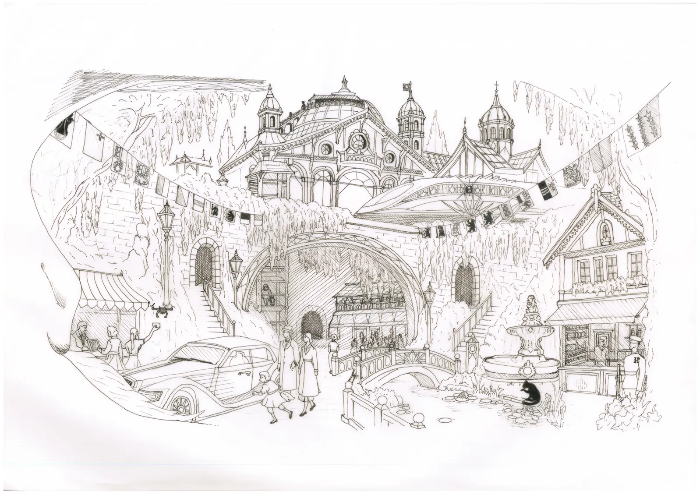
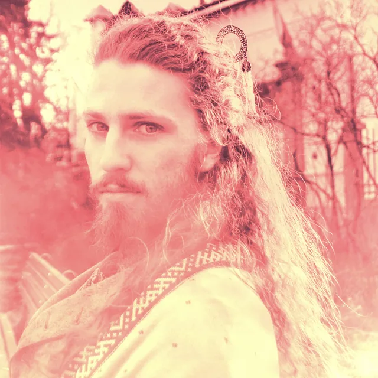
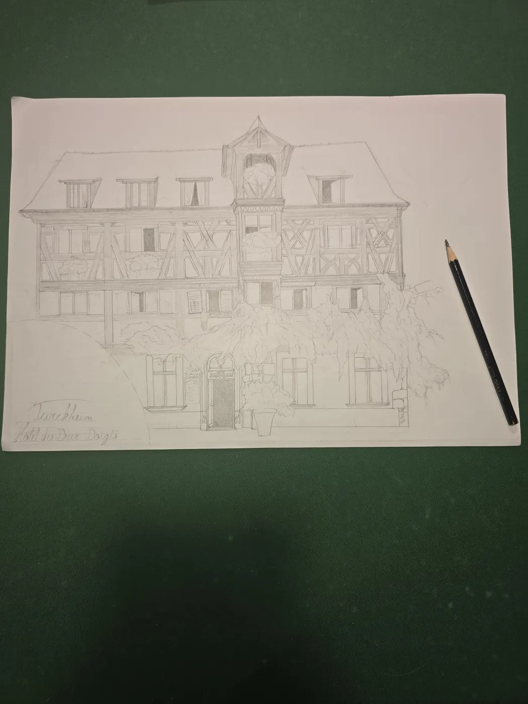
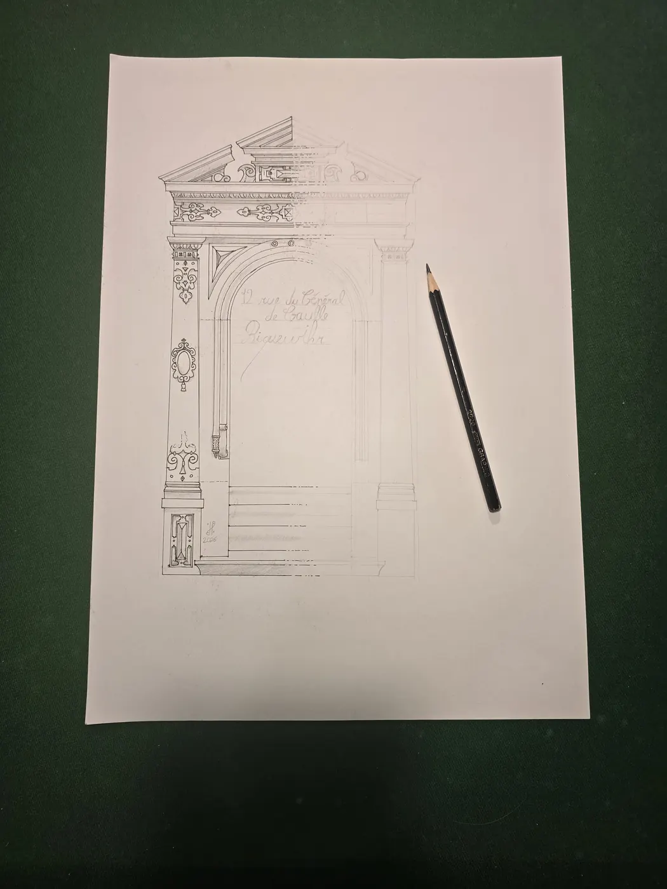
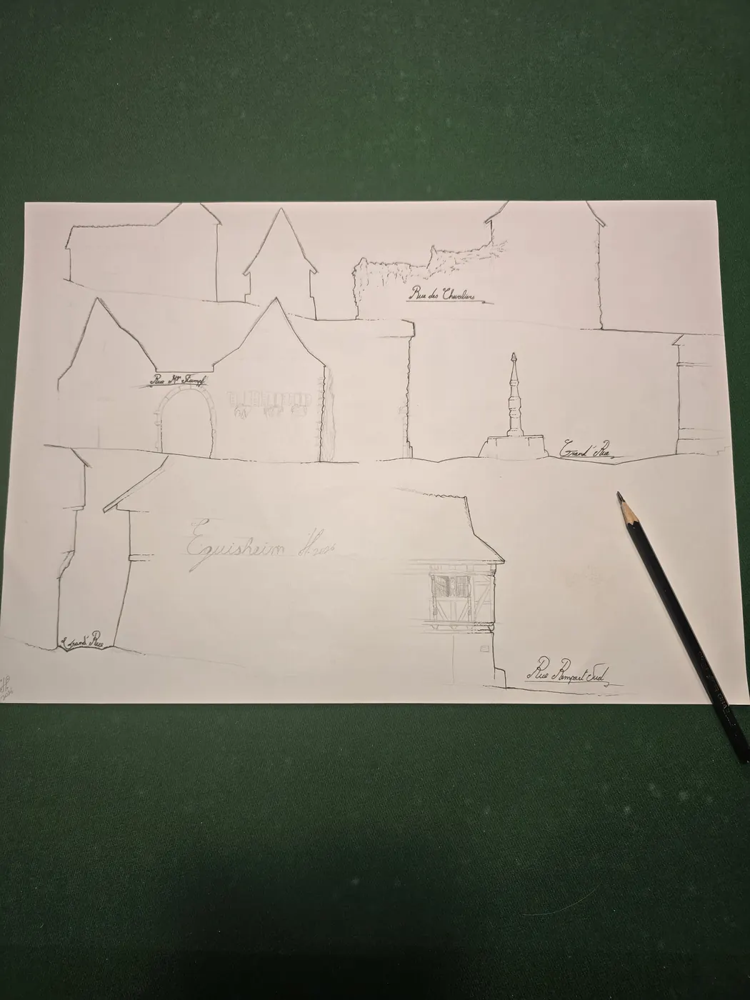
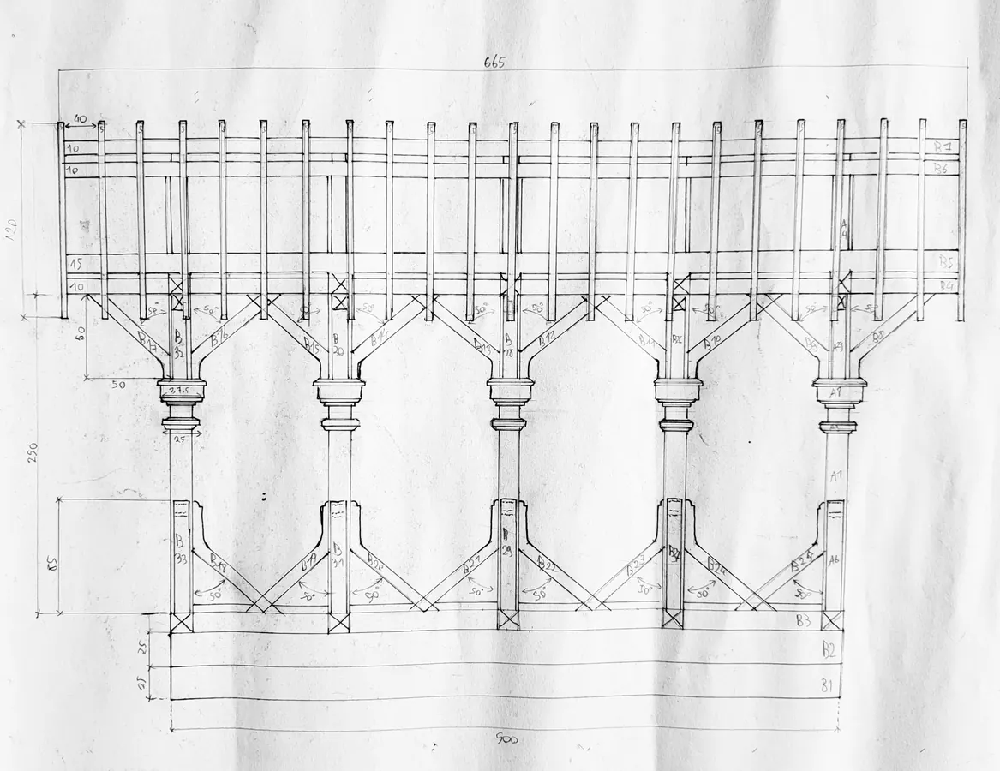

Gallieni
Étude historique — documentation, analyse, synthèse.
Historical study — documentation, analysis, synthesis.
Historische Studie — Dokumentation, Analyse, Synthese.
Assistant d’architecte · Studios Arcas, Paris · depuis le 5 nov. 2026
Architectural assistant · Studios Arcas, Paris · since 5 Nov 2026
Architekturassistent · Studios Arcas, Paris · seit 5. Nov. 2026

Sous William Pesson (architecte-historien) : agence classique / Art Déco / moderniste (Knokke · Paris · Gdańsk). Livrables :
Under William Pesson (architect-historian) : classical / Art Deco / modernist office (Knokke · Paris · Gdańsk). Deliverables:
Unter William Pesson (Architekt-Historiker) : klassisch / Art déco / modernistisch (Knokke · Paris · Gdańsk). Lieferungen:
Étude historique — documentation, analyse, synthèse.
Historical study — documentation, analysis, synthesis.
Historische Studie — Dokumentation, Analyse, Synthese.
Pièces graphiques — hiérarchie du dessin d’agence.
Supporting drawings — studio drawing hierarchy.
Zeichnungen — Hierarchie der Bürozeichnung.
Recherche archivistique — sources et contexte.
Archival research — sources and context.
Archivforschung — Quellen und Kontext.

Pas de diplôme d’architecture ni de CFC dessinateur. Maturité suisse (ENSR). Cible : assistance / dessin / patrimoine en Suisse (Romandie prioritaire). CAD/BIM en apprentissage actif.
No architecture degree, no draughtsperson CFC. Swiss Matura (ENSR). Target: assistant / drawing / heritage roles in Switzerland (Romandie preferred). CAD/BIM actively learning.
Kein Architekturdiplom, kein Zeichner-EFZ. Schweizer Matura (ENSR). Ziel: Assistenz / Zeichnung / Denkmalpflege in der Schweiz (Romandie bevorzugt). CAD/BIM aktiv im Lernen.
OnceLost Games · Archopoia : coordination art / technique / business sous deadline, et espaces 3D habités par le corps et l’attention — même question qu’un bâtiment. Alimenté par neurosciences, anthropologie, éthique. Aussi : UNESCO foresight · PsychoStratégie SA (Lausanne).
OnceLost Games · Archopoia: coordinating art / tech / business under deadline, and 3D spaces inhabited by body and attention — the same question a building asks. Fed by neuroscience, anthropology, ethics. Also: UNESCO foresight · PsychoStratégie SA (Lausanne).
OnceLost Games · Archopoia: Kunst / Technik / Business unter Deadline koordinieren und 3D-Räume, die Körper und Aufmerksamkeit bewohnen — dieselbe Frage wie ein Bauwerk. Getragen von Neurowissenschaft, Anthropologie, Ethik. Auch: UNESCO Foresight · PsychoStratégie SA (Lausanne).
La Table Ronde de l’Architecture · Alsace · Nadia & Noé Morin






INTBAU · Dirk Mortier · Ideal Spaces
Agrilogie Granges-Verney · Moudon, Suisse
Agrilogie Granges-Verney · Moudon, Switzerland
Agrilogie Granges-Verney · Moudon, Schweiz
Encre, A3 — vernaculaire suisse. Ideal Spaces, sept. 2026.
Ink, A3 — Swiss vernacular. Ideal Spaces, Sep 2026.
Tusche, A3 — schweizerische Vernakular. Ideal Spaces, Sept. 2026.

Premier design mesuré, à la main — atelier Mortier.
First measured design, hand-drawn — Mortier workshop.
Erster Aufmass-Entwurf, Handzeichnung — Workshop Mortier.

Portée, membres, chemin de charge.
Span, members, load path.
Spannweite, Stäbe, Lastpfad.
Quel type d’humain un environnement construit produit-il ? Article avec Sergei Gepshtein et Tiziana Proietti — dossier.
What kind of human does a built environment produce? Article with Sergei Gepshtein and Tiziana Proietti — dossier.
Welchen Menschen erzeugt eine gebaute Umwelt? Artikel mit Sergei Gepshtein und Tiziana Proietti — Dossier.
INTBAU · Table Ronde · Arcas · 2025–
Linköping · 2023–2025 · BIOCRACY · DiVA
KSU Vilnius · 9.73/10 · Summa Cum Laude
University of Montana · 2015–2019
ENSR · Chailly, Suisse · 2012–2014
Architecture
Tools
Un échange court suffit — je m’adapte à vos outils.
A short conversation is enough — I’ll adapt to your tools.
Ein kurzes Gespräch reicht — ich passe auf Ihre Tools.